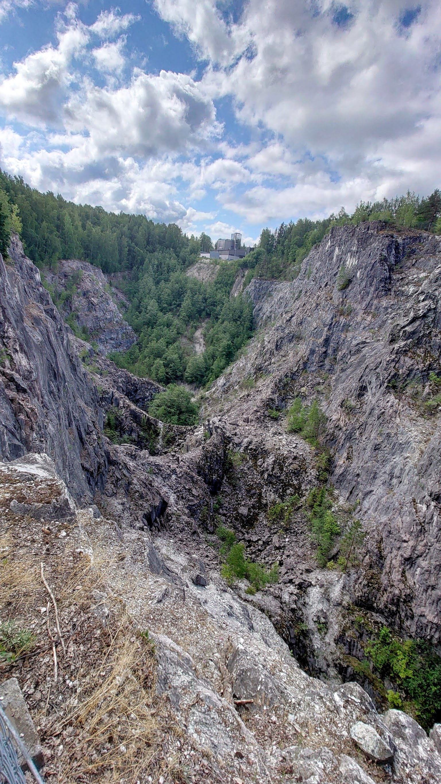
Rantaraitilla pääsee ihailemaan Tytyrin kaivoksen avolouhosta. Lähellä oleva Tytyrin Elämyskaivos vie 100 metrin syvyyteen.
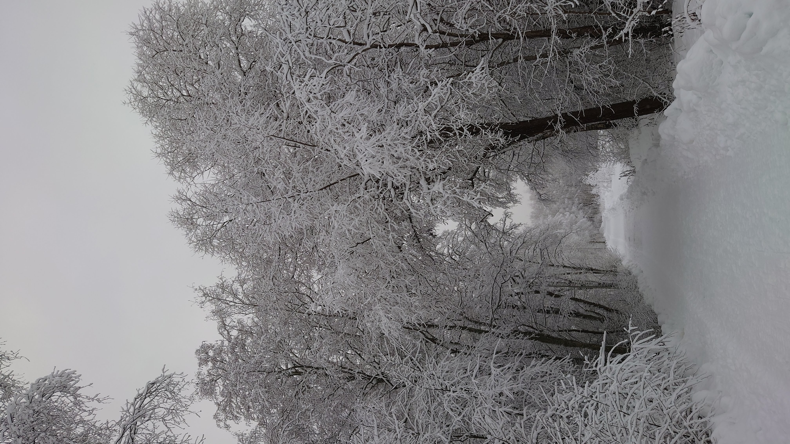
Talvinen maisema moisionpolulta.
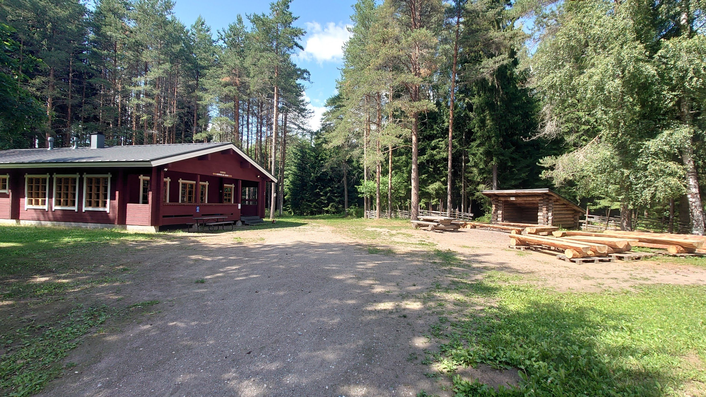
Gunnarlan maja on Hiidenkiertäjien ja Lohjan Seudun Ladun yhteinen ulkoilu- ja latumaja, joka on valmistunut vuonna 1993.
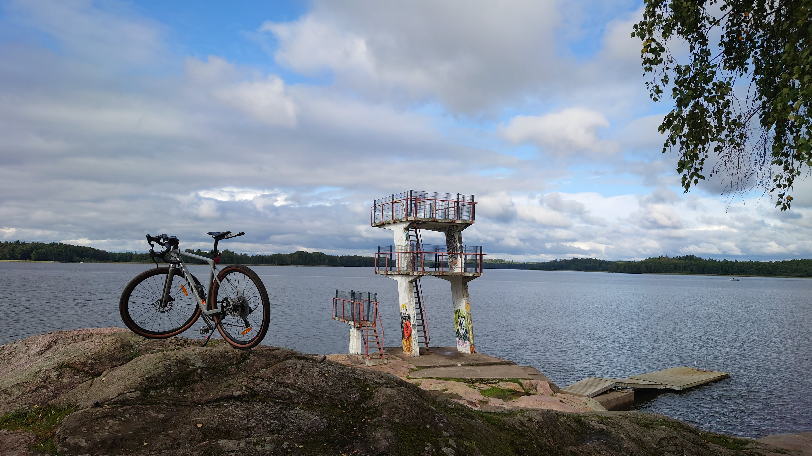
Lasitehtaan korkein hyppytorni on 7,5m korkea.
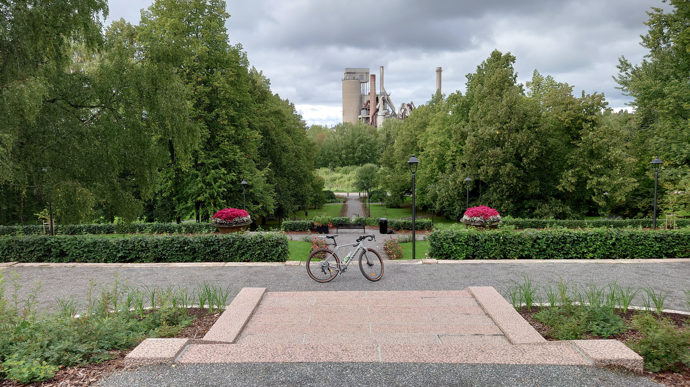
Tunnetun Kalkki-Petterin eli Petter Forsströmin Puisto. Kalkkitehdaskin näkyy taustalla.
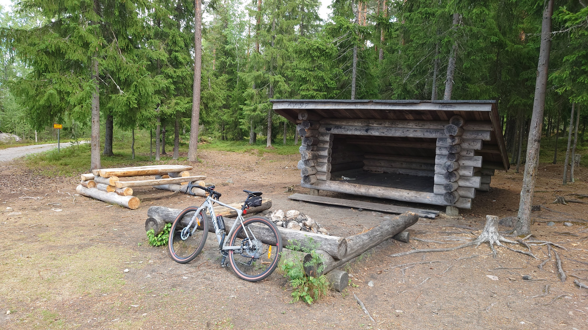
Lohjalta löytyy monia laavuja retkeilyhenkisille.
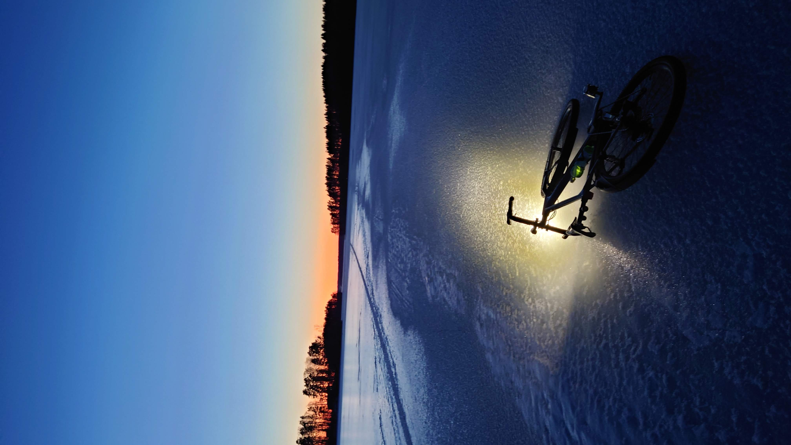
Talvinen auringonlasku Lohjanjärven jäällä.
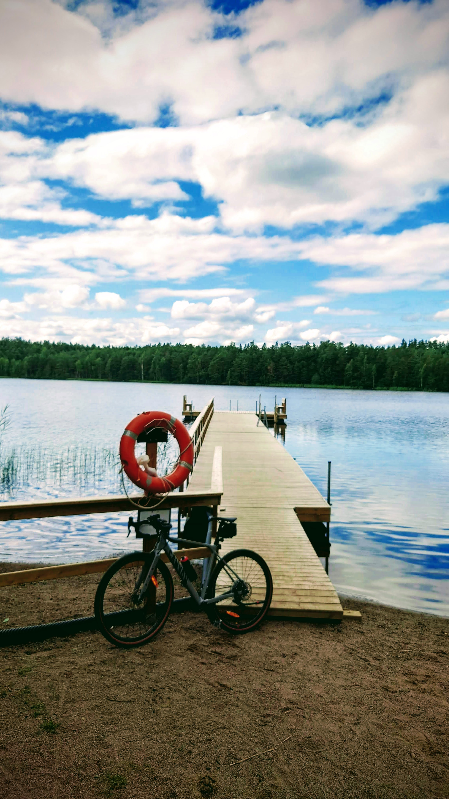
Nälköönlammen uimarannan lähettyvillä on oivia sorapolkuja pyöräilyyn kesällä ja talvella latuja hiihtoon.
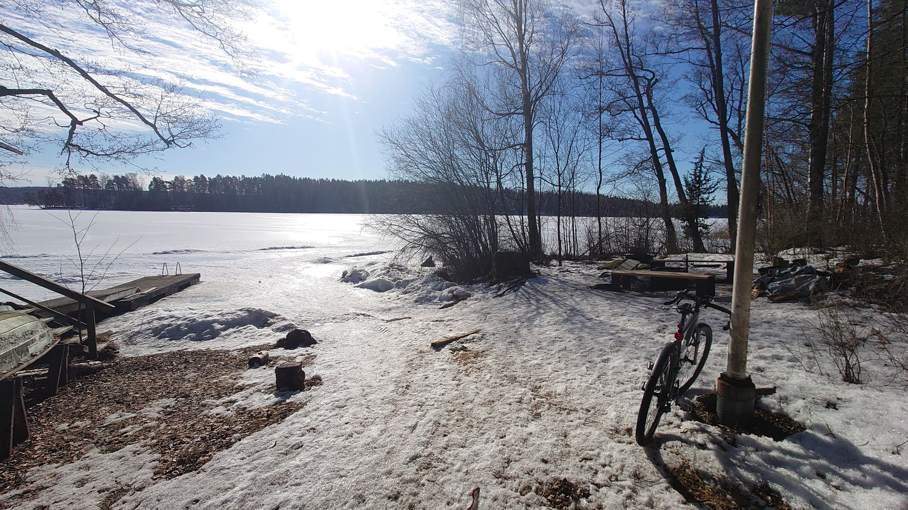
Talvisin Lohjanjärvellä on jäärata jota pitkin pääsee Ollisaaren nuotiolle makkaran paistoon.
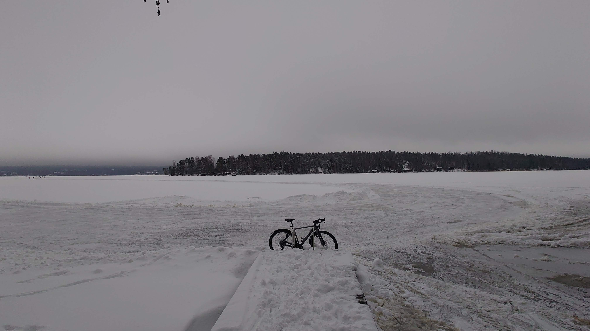
Kaupunki lainaa potkukelkat jääradalle. Voi myös pyöräillä, kävellä, luistella ja välillä on hiihtolatukin tehty jääradan viereen.
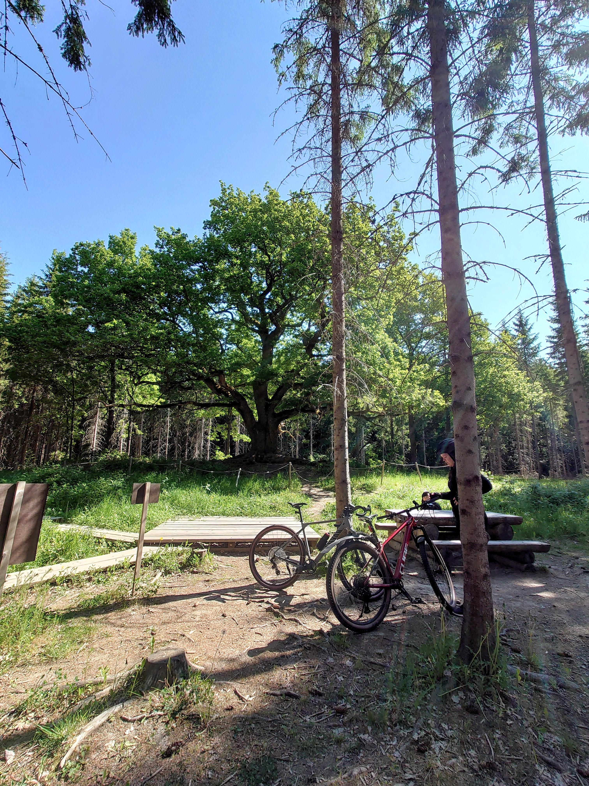
Paavolan tammi, ehkäpä Suomen kaunein puu.
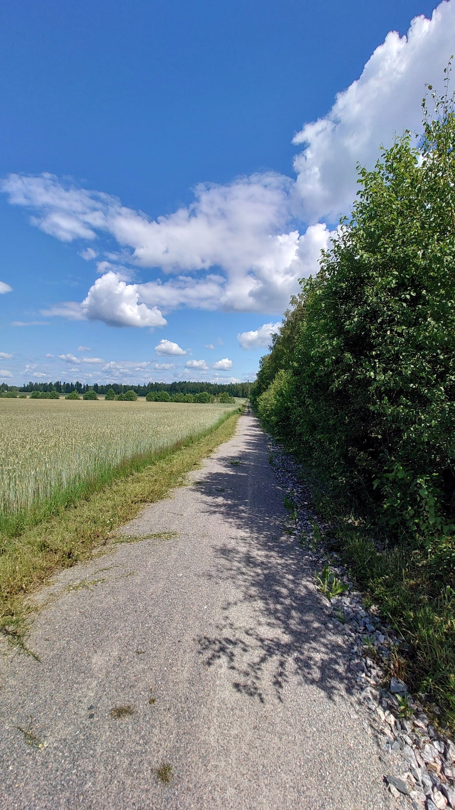
Soraa Lohjan ja Virkkalan välissä.